A Journey For X86 Reset Vector - Wed, Dec 31, 2025
Introduction
Hello folks, and welcome to yet another journey! Today, we are going to dive deep into a processor’s very first breath.
Lately, I’ve been getting up close and personal with the CPU, trying to understand what happens in that split second of silence before the screen even lights up. Honestly, my obsession with this “big bang” moment skyrocketed while I was digging into UEFI Development. There is a whole hidden world running in the background that we usually take for granted.
It’s going to get a bit dusty and complex down here, so… let’s put on our gas masks, i guess…
Reading the Address from Reset Vector
When a system is restarting, the processor reads the first instruction from a hard-coded pointer, and we call this Reset Vector. This Reset Vector is actually a pointer that the processor reads after a reset. In Intel 8086, the pointer is at 0xFFFFFFF0 (16 bytes below 1 MB). In other words, the processor starts from 0xFFFFFFF0 address after a reset.
In beginning of the process the processor is in Real Mode and 16-byte (8086). Don’t be suprised that even modern processors runs in 16-byte state in the beginning, but some processors will boot into protected mode instead. But now we need to understand this Real Mode and Protected Mode before the Reset Vector.
Real Mode and Protected Mode
In all x86 CPUs, Real Mode is an operating mode that provides compatibility with the original 8086 processor, allowing software to access memory using a simple addressing scheme and execute legacy code. This mode was the only available mode in X86 CPUs before the introduction of Protected Mode. Even in these times the X86 CPUs is started from Real Mode like today.
While the 80286 processor introduced “virtual addresses” and hardware-level protection, modern x86 processors still initialize in Real-Address Mode to ensure that legacy code written for the original 8086 can still execute. In this mode, the processor utilizes a segmented memory model where 16-bit segment selectors are combined with 16-bit effective addresses to determine the memory location. The standard architectural calculation involves left-shifting the segment selector by 4 bits and adding the offset, a process that normally restricts the addressable range to the first 1 MByte (000F_FFFFH) of physical memory
In fact, this creates a technical paradox: if the processor is in 16-bit Real Mode and limited to 1 MB, it should not be able to reach the Reset Vector at FFFF_FFF0H, which sits at the very top of the 4 GB address space. The solution to this is a hardware mechanism involving the “hidden part” of the segment registers (we will see later).
Calculation of Any Address in Real Mode
As established, memory addressing in Real Mode relies on the Segment:Offset logical addressing scheme. Since the registers are only 16-bit (ranging from 0000H to FFFFH), they cannot directly index the full memory space individually.
To generate a linear 20-bit Physical Address, the CPU performs the following calculation:
Physical Address = (Segment Selector * 16) + Offset
If we can talk with hexadecimal terms, multiplying by 16 (10H) is equivalent to shifting the Segment value one digit to the left (or 4 binary bits).
Let’s think that if the Code Segment (CS) register holds 2000H and the Instruction Pointer (IP) holds 1234H, the physical address is derived as follows:
-
Shift Segment: 2000H -> 20000H
-
Add Offset: 20000H + 1234H
In the result we have 21234H value for Physical Address.
Processor Status and Calculation of Reset Vector
When the processor first powers up, it starts in Real Mode (16-bit state). However, it fetches the very first instruction from the physical address 0xFFFFFFF0.
Now we know the calculation formula of Real Mode but at reset, the processor does NOT use this formula. Instead, it relies on the specific initial values of the CS (Code Segment) and EIP (Instruction Pointer) registers.
Immediately after a hard reset, the register states are as follows:
-
EAX, EBX, ECX, EBP, ESI, EDI, ESP: Reset to 0.
-
EDX: Contains the CPU Stepping Identification Information.
-
EIP: Initialized to 0xFFF0.
The CS register is the exception. To understand why, we must look at the internal structure of Segment Registers. Every segment register consists of a Visible Part and a Hidden Part (Intel refers to this as the ‘Descriptor Cache’):

Here is the trick: Upon reset, the CS register’s Visible Selector is set to 0xF000, but the processor forcibly sets the CS Hidden Base Address to FFFF_0000 (Don’t forget Real Mode’s Segment:Offset addresses).
Therefore, the processor calculates the Reset Vector by combining the Hidden Base of CS with the value of EIP:
We can check this in QEMU:

We can’t see the values of hidden part using info registers command. Instead we need to use monitor info registers command (in QEMU + GDB combination). Also you can check the status of each register.
Lastly i need to mention this that these control registers CR2, CR3 and CR4 are all reset to 0 but CR0 is set to 6000_0010h value:
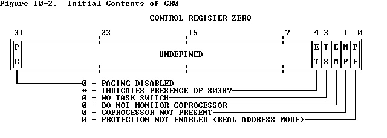
After the reset, Paging (Bit 31) is disabled and Protection (Bit 0) is not enabled. If this Protection bit were 1, then it would indicate that the processer is in Protection Mode. Also we can see the result of CR0 in GDB:
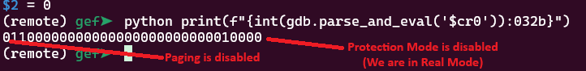
Fetching Instruction from the Reset Vector
Once the processor calculates this 0xFFFFFFF0 address, it places it onto the system bus to fetch the instruction. However, the processor itself is agnostic about where this data resides. It does not know if the target address belongs to the system RAM, a PCI device, or the BIOS chip.
This is where the Chipset (specifically the Southbridge or PCH - Platform Controller Hub) acts as the traffic controller. The chipset monitors the address bus, and when it detects a request for this specific high-memory range, it must decide where to route it.
To handle this, the chipset utilizes a specific configuration register known as FWH_DEC_EN1 (Firmware Hub Decode Enable 1). FWH_DEC_EN1 is located within the LPC (Low Pin Count) Interface Bridge registers of the chipset. Its primary function is to tell the chipset which memory ranges should be redirected to the Firmware Hub (FWH)—which is the Flash ROM chip containing the BIOS/UEFI code—instead of the main system memory (RAM). From Intel® 5 Series Chipset and Intel® 3400 Series Chipset (Page 487):
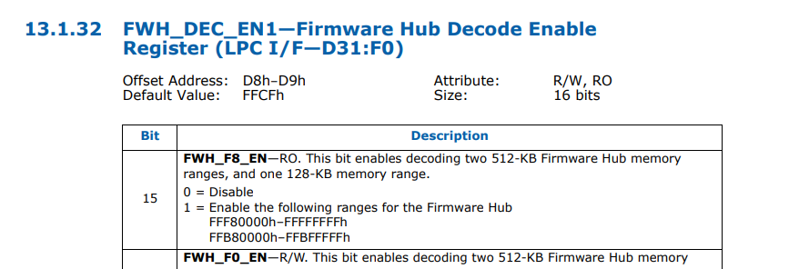
The mechanism works as follows:
-
Decoding Ranges: The FWH_DEC_EN1 register contains specific bits (like Bit 7, Bit 6, etc.) that correspond to different memory segments at the top of the 4GB address space (e.g., the range FFFF_0000h to FFFF_FFFFh).
-
Redirection: When the system resets, the hardware defaults for these bits are typically set to “Enabled”. This ensures that when the CPU requests 0xFFFFFFF0, the chipset instantly recognizes this address falls within the “BIOS Range.”
-
The Fetch: Instead of sending the request to the DRAM controller, the chipset asserts the LPC (or SPI) bus signals, activating the Flash ROM chip.
A simple diagram is shown below:
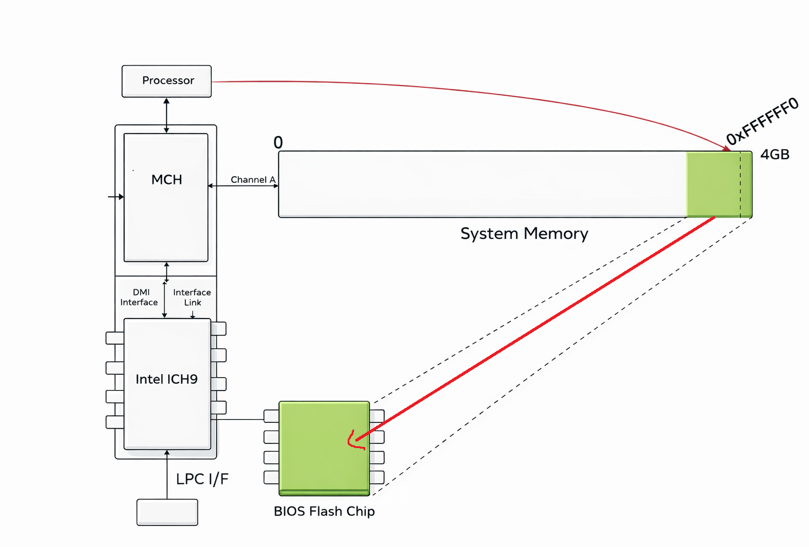
In short, the area the processor wants to read (0xFFFFFF0) is actually located in the BIOS chip, not in RAM, and the instruction is taken from this address in the BIOS chip within the Reset Vector and given to the processor.
Analyzing X86 BIOS
Now time to analyze any X86 BIOS. For the tool usually i used Ghidra (for decompiler) and QEMU + GDB (for debugging).
Determining Whether Boot Process is Cold or Warm
If we check the FFFF0 address, we can see a simple jump code:
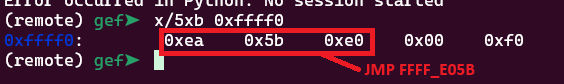
0xEA opcode corresponds to jmp code. In the Reset Vector there is only one command, and that command is only the jmp command. Because the Reset Vector is located at physical address FFFF_FFF0H, remember that there are only 16 bytes of addressable memory remaining before the end of the 4 GB address space (FFFF_FFFFH). In my case the address is FFFF_E05B.
Let’s see this address in Ghidra:
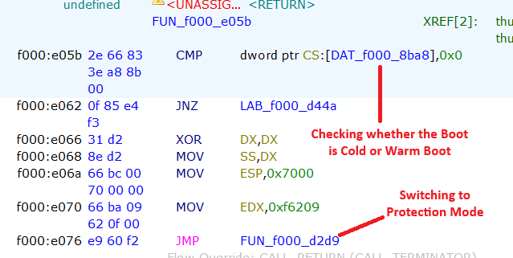
The processor quickly checks whether the boot is a Cold Boot or a Warm Boot. Cold and Warm Boot are actually two different types of system startup:
-
Cold Boot happens when the computer is started from a completely powered-off state. In this case, the processor performs a full initialization: it checks the hardware (POST – Power-On Self Test), initializes memory and devices, and then loads the operating system.
-
Warm Boot occurs when the system is restarted without turning off the power, such as pressing the reset button or choosing “Restart” from the operating system. Here, some hardware checks may be skipped, making the boot process faster.
If the value is 0 this means that the boot is Cold, in other word the system was powered off completely. But if the address carries a value higher than 0, then the processor determines the boot process as ‘Warm Boot’. In the redirected section (For Warm Boot), there is a jump command, and the main steps begin here. However, if the value is 0, it begins to switch to Protection Mode.
I need to quickly mention that we know that the processor is currently running in 16-bit mode and in Real Mode. In the following sections, the processor will attempt to switch to Protected Mode as quickly as possible. I will come back to this later.
Extracting Shutdown Byte
If we can track this f000_d44a address, we may see a jump code and this jmp code jumps to an important section:
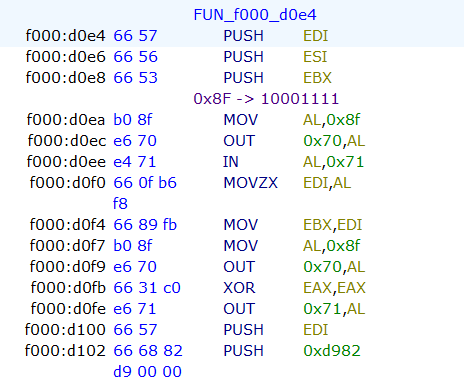
At the beginning of this function, the code checks the Shutdown Status Byte. According to IBM, this byte is located at offset 0x0F in the CMOS RAM. The code interacts with the CMOS to read this value and determine the cause of the system reset. This check is a vital part of the BIOS POST sequence, allowing the system to distinguish between a cold start, a soft reset, or a return from Protected Mode.
The Shutdown Status Byte (Hex 0F) can hold specific values that dictate the BIOS’s next action. These values are defined by the power-on diagnostics. From IBM Technical Reference (1985):
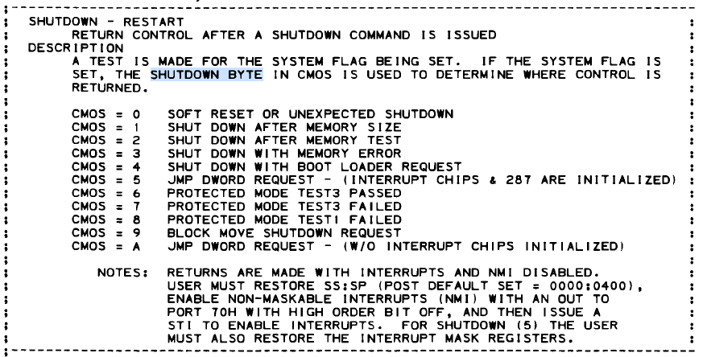
However, in our case we can see that it checks 0x8F. Don’t be surprised that we read the byte with this 0x8F value. The main difference here is to set the first bit of the 0xF value to 1. 0xF value corresponds to 1111 binary and if you add this value to 0x80, you have 10001111 (0x8F) result. In this case, the byte that will read from CMOS will be Shutdown byte. The reason the processor adds the value 0x80 here is to activate the NMI bit and perform this bit read. NMI (Non-Maskable Interrupt) is masked off (disabled) during this operation.
Accessing the CMOS RAM is a two-step process involving I/O ports 0x70 (Address) and 0x71 (Data):
MOV AL,0x8f
OUT 0x70,AL ; Determine the byte
IN AL,0x71 ; Pass the result to AL Register
This sequence must be atomic; if an NMI were to occur between writing the address to port 0x70 and reading the data from port 0x71, the interrupt handler might itself try to access the CMOS, changing the address register and corrupting the original read. The system architecture uses Bit 7 of port 0x70 as the NMI Mask:
-
Bit 7 = 1 (Values 0x80–0xFF): NMI is Disabled (Masked).
-
Bit 7 = 0 (Values 0x00–0x7F): NMI is Enabled (Unmasked).
And if you look at the rest of the code you can see that the processor sets this shutdown byte as 0:
MOV AL,0x8f
OUT 0x70,AL ; Determine Shutdown Byte
XOR EAX,EAX
OUT 0x71,AL ; Pass the 0 to the Byte
And now we are in important section:
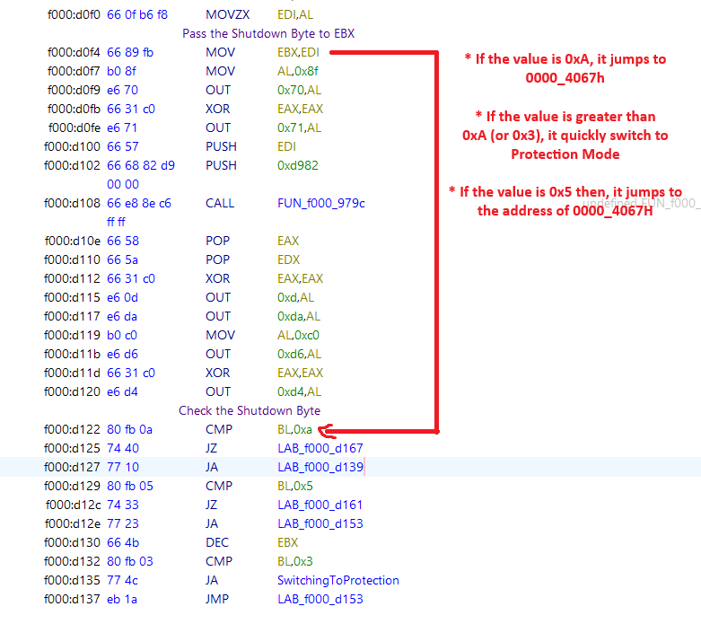
After the getting the Shutdown Byte, the processor starts to check the byte. If the value is greater than 0x3 or the value is 0xc then it switches to Protection Mode. Like i said, the processor tries to escape from the 1 MB narrow space of Real Mode as quickly as possible.
However, if the value is 0xA or 0x5, the processor tries to jump to the address of 0000_4067h. Here’s an example:
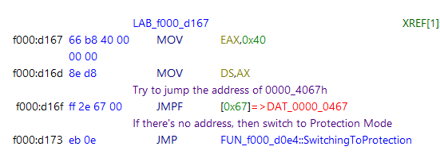
The address 0000_4067h actually is really important. This is a check related to waking up from sleep mode on this operating system.
Modern Operating Systems run in 64-bit Long Mode or 32-bit Protected Mode, but the BIOS reset vector (remember that it is FFFF_0000) always starts in 16-bit Real Mode. The BIOS cannot directly jump into a 64-bit kernel. To solve this, the OS prepares a small, specialized piece of 16-bit code—often called a “Trampoline” or “Real Mode Stub”—somewhere in the low memory (usually below 1MB). The OS calculates the segment and offset of this trampoline code and writes it to 0000:0467
When you press the power button to wake the PC, the following sequence occurs, validating our previous findings:
- The processor starts at FFFF:0000.
- The BIOS code queries the CMOS Shutdown Byte (Port 0x70/0x71).
- It sees the value 0x0A (Resume from S3).
- Instead of scanning for bootloaders or counting RAM, the BIOS immediately loads the address stored at 0040:0067
Let’s check the codes again. EAX register gets 0x40 value, then the processor tries to jump the address of 0000_0467 address. If the computer is in sleeping mode and you press Wake button, the processor tries to jump the address which given from operating system to continue the process. Otherwise it switches to Protection Mode. Also we can benefit from ralf-brown-interrupt-list:
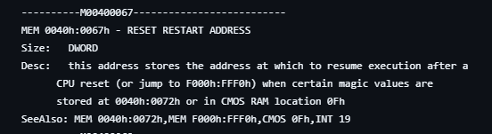
However if the value is 0xb or 0xc, it uses LSS (Load Far Pointer) for the address:
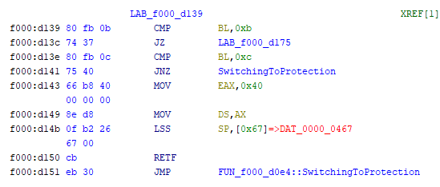
The status codes 0x0B and 0x0C reinterpret this exact same memory location as a stack pointer (SS:SP). This is a critical distinction in x86 architecture known as context restoration. If we can observe the code, it loads SS:SP from 0040:0067 and it executes return instruction from the stack.
Switching to Protection Mode
As we can see, the processor is trying to switch to protection mode quickly. Let’s see this section:
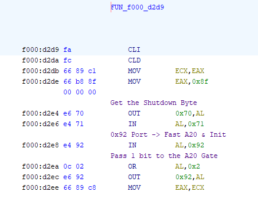
In the beginning of the function, the code performs a strategic check of the CMOS Shutdown Byte, immediately after retrieving the system status, the routine targets I/O Port 0x92 (System Control Port A). By executing the OR AL, 0x02 operation, it sets Bit 1, which corresponds to the Fast A20 Gate.
It is preparing for a potential “Warm Boot” or “S3 Resume.” Since the Operating System (which controls the computer before the reset) likely resides in Protected Mode using memory above 1MB, the BIOS pre-emptively unlocks the A20 Line using this fast port method. It effectively bypasses the slower, legacy method of asking the Keyboard Controller (8042) to do it.
Now we are in important section:
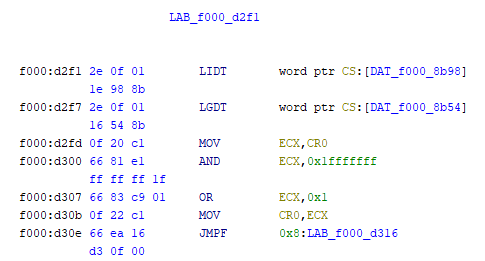
Before the CPU can enter Protected Mode, it needs to know the new rules of the road. In Real Mode, memory is free-for-all. In Protected Mode, everything is strictly regulated. Let’s meet our commands:
-
LGDT (Load Global Descriptor Table): Think of the GDT as the “Master Map of Memory.” In Real Mode, the CPU uses physical addresses directly. In Protected Mode, it uses “Selectors.” The GDT tells the CPU: “This chunk of memory is for Code, this chunk is for Data, and this chunk is Read-Only.
-
LIDT (Load Interrupt Descriptor Table): Think of the IDT as the “Emergency Contact List.” If the software crashes (Exception) or the hardware needs attention (Interrupt) while in Protected Mode, the CPU needs to know where to jump to handle it. The IDT provides these addresses.
Then the processor clears the Paging (Bit 31). We want Paging OFF during this transition to ensure we are working with raw physical addresses initially. After that it sets the PE (Protection Enable) bit with OR instruction.
After the value of CR0 is set, it continues processing by jumping to the specified point:
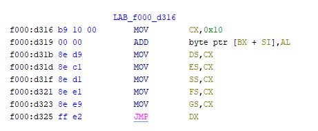
That’s all!
Conclusion
My analysis of Reset Vector ends here. I hope this article has been informative. After reading this blog post, you can analyze the next steps yourself.
Good luck with your research!
References
- Intel® 64 and IA-32 Architectures Software Developer’s Manual Volume 3A: System Programming Guide, Part 1
- IBM Technical Reference (1985)
- John Butterworth & Xeno Kovah’s ‘Advanced Intel x86: BIOS and SMM’
- OSDEV - System Initialization (x86)
- Wikipedia - Reset Vector